Special Topics Case Study
Research & Activity Documentation
Natasha Alvarado Dubkova
Introduction
In this project (Module 1) we mainly conducted research exploration and a proposal for the future of this project. Through two weekly activities and one project proposal we will explore, ideate, research and document our chosen topic. Activities include identifying tech, gear, software, and/or tutorials, and through the activities we will experiment and commit to a project concept to develop through the term into Module 2 and then Module 3. After brainstorming we decided to move forward with a 3D design centred product with an emphasis on 3D modelling and HTML code.
Module 1: Concept
Research
Here we started brainstorming possible collaboration ideas and settles on a Character Creator website before beginning initial action research.
Action Research Phase 1
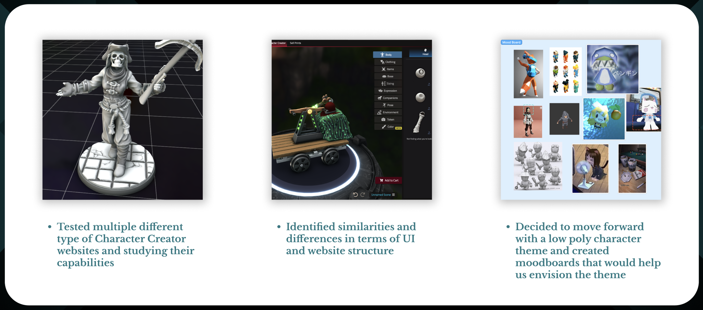
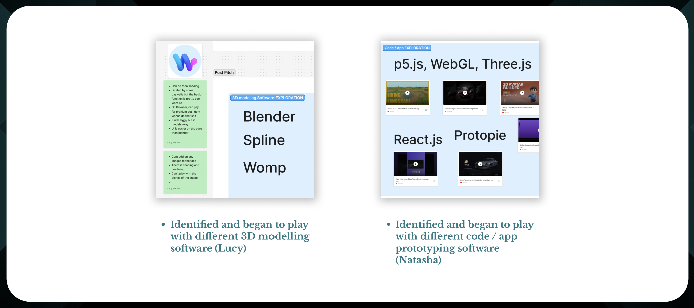
Action Research Phase 2
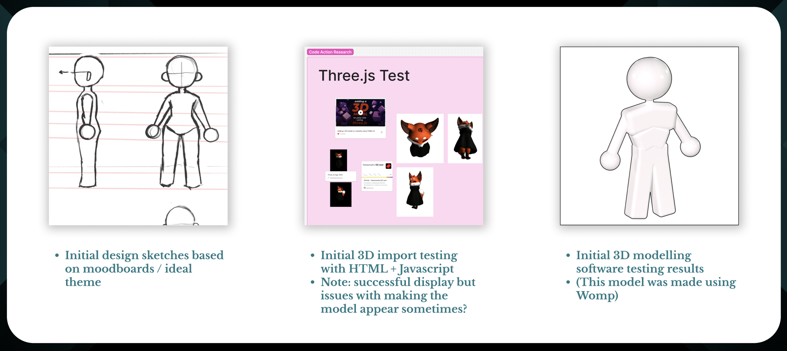
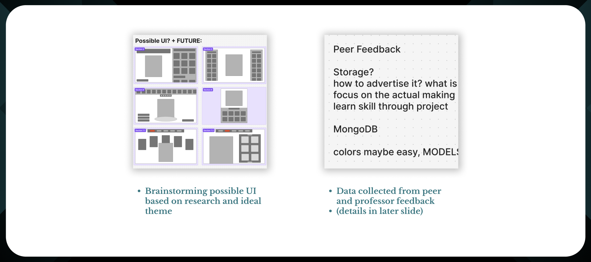
Project 1: Concept
Our original concept was to create low poly models to create a cute and simplified character creator that didn't involve too many details (similar to the Wii character creator style). However, after receiving feedback from peers we decided to switch from human models to ANIMAL ones. This would reduce the possible storage issues due to less accessory assets (e.g. clothes, hair...) and opens us to customization based on textures as well as simplifying.
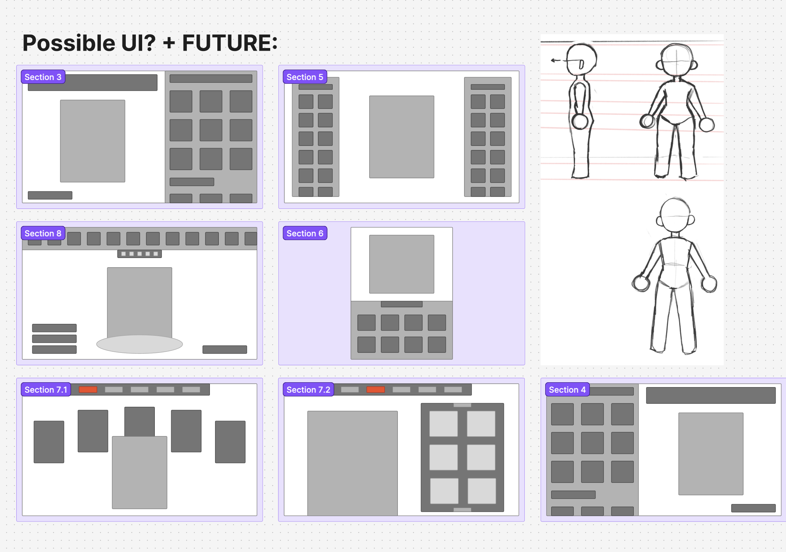
Module 2: Prototype
Research
In this project (Module 2) our goal was to commit to a deep dive of our chosen project path (a Character Creator: HTML code + 3D modelling) using Action Research as a research method. Our strategy was to separate in order to focus on our specific areas of research then converge in order to stay updated. This allowed us to maximize our time as we followed our path, further enhancing our learning and design. Our exploration became more strategic and deliberate, leading us to develop a cumulative prototype of our final product.
Action Research Phase 1
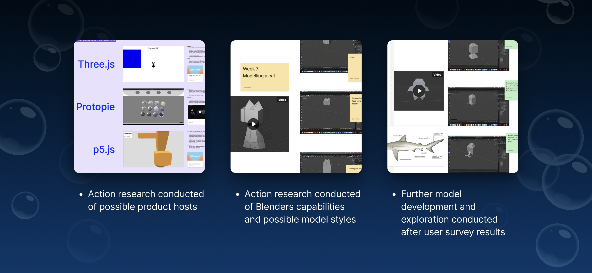

Action Research Phase 2


Project 2: Prototype
Final prototype of project 2. Models made by Lucy, HTML made by Natasha. UI design and functionality are a combined effort. Made in p5.js.

Module 3: Product
Research
In this project (Module 3) our goal was to refine our research exploration into a final state. The direction our action research has taken will have resulted in building a deeper understanding of a topic or broadening our understanding of a topic.
Action Research Phase 1
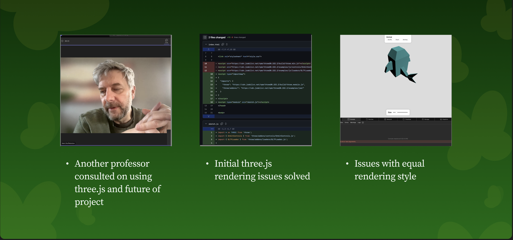
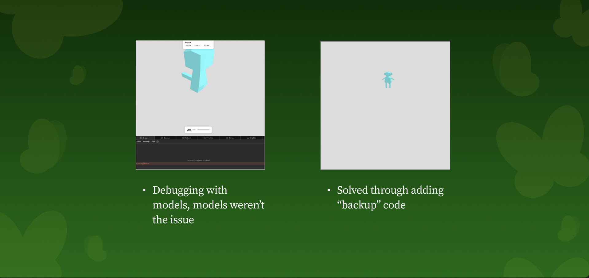
Action Research Phase 2
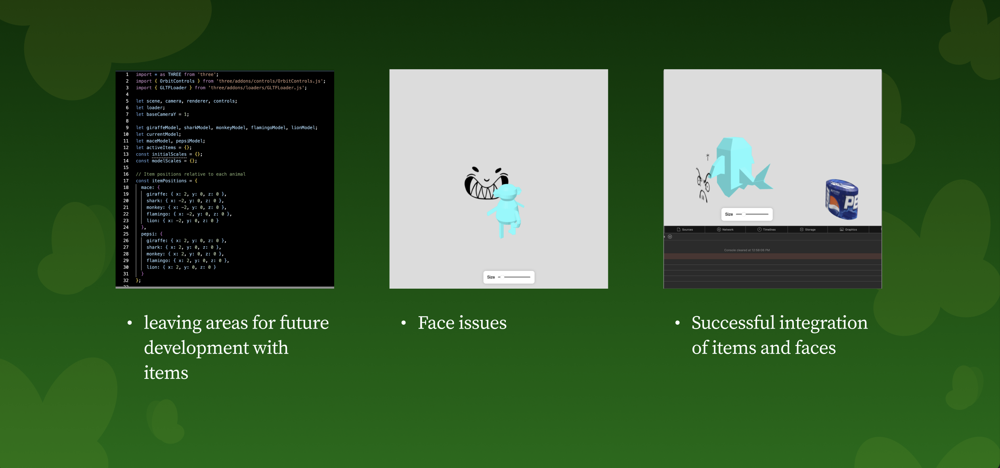
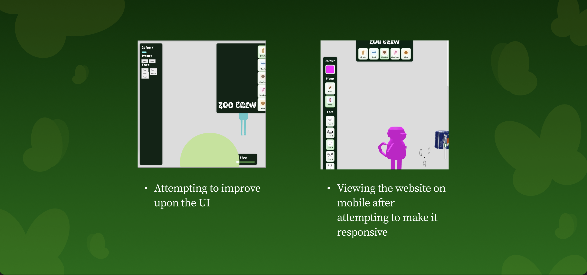
Project Product
After many iterations and action research cycles we finally have a working product with updated UI. I'm very happy that we actually managed to have a functioning finished product.
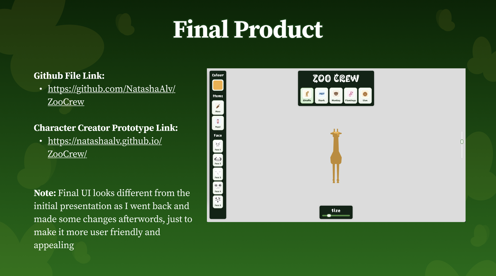
Research Summation
Working on a Three.js project to create a simple zoo-themed character creator was a really engaging experience. It helped me better understand how 3D elements are rendered and manipulated in a web environment, especially when it comes to positioning models, handling user input, and managing scene composition. One of the more interesting challenges was making the interface intuitive while still allowing for creative customization of the characters. Collaborating with another person who created the models added an extra layer to the project. It required clear communication about file formats, scale, and how the models would be used within the scene. There were moments where adjustments were needed on both sides to make sure everything worked smoothly together, which made the process feel more like a real-world development workflow. Overall, it was a valuable experience that combined technical learning with teamwork, and it gave me a better appreciation for how different roles contribute to a final product.
Reflection
Describe how resolved you feel as a design student:
Pretty resolved, I made a working character customization website
Are there places you can improve?:
Definitely, as stated in the previous slide I would work on the items and UI a bit more
Are there ways to improve collaboration?:
Yes, I feel I could have pushed for a bit more in terms of model capabilities but we made it work
What would be the best outcome on following through with your project plans?:
To further develop this website on my own time in the future purely for my own learning
What could you do to ensure this successful outcome?:
Scheduling is always an issue I can improve upon
Powered by w3.css